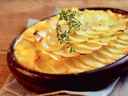

Gratin Dauphinois
Préparation possible à l'avance.
Ingrédients
- 500g de pommes de terre
- 1 gousses d'ail
- 10 cl de crème
- 35 g de beurre
- 300g de lait
- muscade
- sel
- poivre
Recette
- Eplucher, laver et couper les pommes de terre en rondelles fines (NB : ne pas les laver APRES les avoir coupées, car l'amidon est nécessaire à une consistance correcte).
- Hacher l'ail très finement.
- Porter à ébullition dans une casserole le lait, l'ail, le sel, le poivre et la muscade
- Plonger les pommes de terre dans l'eau bouillante et laisser cuire 10 à 15 min, selon leur fermeté.
- Préchauffer le four à 180°C (thermostat 6) et beurrer un plat à gratin.
- Placer les pommes de terre égouttées dans le plat. Les recouvrir de crème, puis disposer des petites noix de beurre sur le dessus.
- Enfourner pour 50 min à 1 heure de cuisson.